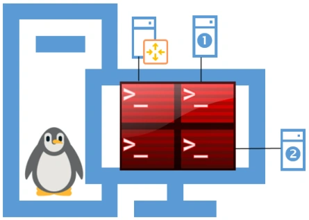

Transcription du document de formation dans l’ordre des pages.
Configuration du service SSH
TP 01 du Module 04 – Administration à distance
Avant de démarrer ce TP, il convient d’avoir suivi les vidéos des modules 1 à 4 et d’avoir réalisé les TP proposés.
Durée estimée
1 heure
Énoncé
Objectifs
Installer et configurer le service SSH
Prérequis
Les ateliers précédents doivent être fonctionnels
Notes
Pour toutes les configurations réseau, vous remplacerez num_stag par un chiffre entre 1 et 30, par exemple 10.
Etape 1 - Installation du serveur SSH sur TOUS les serveurs Debian
Configurer le fichier sources.list de tous vos serveurs afin qu’ils ne contiennent que les lignes suivantes :
deb http://ftp.fr.debian.org/debian/ buster main
deb http://security.debian.org/debian-security buster/updates main
deb http://ftp.fr.debian.org/debian/ buster-updates main
Mettre à jour le gestionnaire de dépendances
Vérifier l’état d’installation du paquet openssh-server, l’installer au besoin.
Etape 2 - Configuration du service SSH
Installer Terminator sur la machine Cli-db-10 ; vous utiliserez cette machine pour centraliser l’administration de vos serveurs GNU/Linux.

Poste Linux utilisé pour centraliser l’accès aux serveurs du laboratoire.
Configurer le service SSH pour permettre la connexion à vos différents serveurs sans avoir à saisir de mot de passe (échange de clés).
Vous allez devoir vous connecter depuis la machine Cli-db-10 sur les serveurs : RouTux, Deb-S1, Deb-S2.
Etape 3 - Utilisation des commandes de copie sécurisée
Sur la machine Cli-db-10, utiliser la commande scp pour copier les fichiers de configuration paramétrés sur chacune des machines Debian (interfaces, resolv.conf, sources.list…).